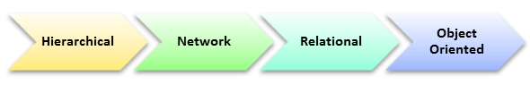

Type of database management system
Links:

Hierarchical DBMS:
Model data is organised in a tree-like structure in a Hierarchical database.
Data is a Hierarchically Stored format (top down or bottom up).
Data is represented using relationship between parent and child.
In Hierarchical DBMS parent can have several children but only one parent is available to them.
Network Model:
The network database model allows for multiple parenting for each child.
It helps you address the need to model more complex relationships, such as the many-to-many relationships of orders / parts.
Entities are organized in this model in a graph that can be accessed through multiple paths.
Relational model:
Relational DBMS is the most widely used model of DBMS, since it is one of the easiest.
This model is based on the standardisation of data in tables rows and columns.
Relational model stored and manipulated in fixed structures using SQL.
Object-Oriented Model:
Data stored in Object-oriented Model in object form.
The structure that is called classes that display data inside it.
It describes a database as an object set that stores values and operations of both the data members.